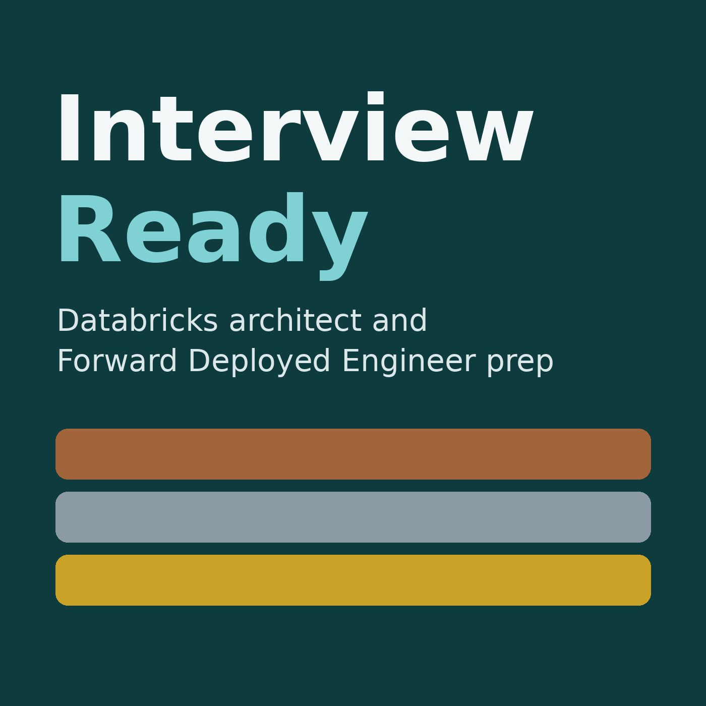

Interview Ready
Eleven episodes, about 113 minutes. A revision series for Databricks architect and Forward Deployed Engineer interviews.
https://tripsankur.github.io/interview-ready/feed.xml1. The game plan: how to answer, how to navigate, and how to use STAR
Welcome to Interview Ready, a revision series for senior Databricks interviews: data architect roles at Databricks consulting partners, and Databricks' own Senior Forward Deployed Engineer role. Eleven episodes. This first one is about how to answer, not what to answer. The next nine cover the content, and the last one is a rapid-fire drill where you answer out loud.
2. Your story: the pitch and your experience
In this episode we build the opening of every interview: "Tell me about yourself." Then we cover how to elaborate when they ask about your lakehouse design work, your hands-on development, and your career. The examples here use a fictional data platform lead, so swap in your own projects and numbers.
3. Spark and Delta Lake internals
This episode covers the questions that test depth: what Spark does when you run a query, the shuffle from first principles, tuning, Delta Lake's transaction log, and data layout: partitioning, Z-order, liquid clustering, predictive optimization, small files, and coalesce versus repartition. The Forward Deployed Engineer profile asks specifically for knowledge of Spark runtime internals, so expect real depth here.
4. Pipelines, compute, platform basics and delivery
This episode covers ingestion strategy, metadata-driven frameworks, Spark Declarative Pipelines, the trouble with medallion dogma, compute selection, a set of platform basics that often come up as quick questions, and CI/CD. Kafka and streaming get their own episode next.
5. Kafka and streaming, in depth
Streaming is where interviewers find out whether you've run things in production. This episode gives you the vocabulary and the failure stories to show you've run Kafka pipelines for real. We cover Kafka fundamentals, reading Kafka with Structured Streaming, exactly-once, triggers and latency, watermarks and late data, joins, state, change data capture, operations and monitoring, and four streaming scenarios.
6. Governance, security and networking
This is home ground for you. Your privacy and governance work is your strongest differentiator, so this episode is about saying it crisply. We cover Unity Catalog, row filters and attribute-based access, Databricks Apps authentication, tokenisation, enterprise governance strategy, multi-region design, and Azure networking: VNet injection and Private Link.
7. Design questions and first-principles thinking
Design rounds feel open-ended, but they're scored on structure. This episode gives you a repeatable way to run any design question, then walks through the four scenarios most likely to come up, and finishes with curveball questions answered from first principles.
8. Scenario-based questions, and the resume grill
Scenario questions sound like this: "It's Monday morning, the executive dashboard is wrong, what do you do?" They test judgement under pressure, more than knowledge. The structure that works every time is: stabilise, diagnose, fix, prevent, and communicate. Stabilise means stop the damage first. Diagnose means find the real cause, not the first symptom. Fix means the smallest safe change. Prevent means the change to the system so it doesn't recur. And communicate means telling the right people early, with facts and a time for the next update.
9. The managerial round: STAR stories, leadership and consulting
The managerial round tests judgement more than technology: ownership, stakeholders, leading people, handling clients. At a consultancy, picture the interviewer asking one question: "Can I put this person in front of a client on their own?"
10. The Senior Forward Deployed Engineer role
The Senior Forward Deployed Engineer role at Databricks used to be called Resident Solution Architect. It's a customer-embedded engineer: you sit with a strategic customer and build, deploy and debug production systems end to end, often Databricks Apps. It's more hands-on than an architect role, and the bar is evidence: production outcomes, role clarity, and certification.
11. The rapid-fire drill
This is the practice episode. I'll ask a question, then leave a pause. Answer out loud during the pause, in under a minute, using a headline first. Then you'll hear a short model answer to compare. If you need more time, pause the player. Replay this episode the day before each interview.